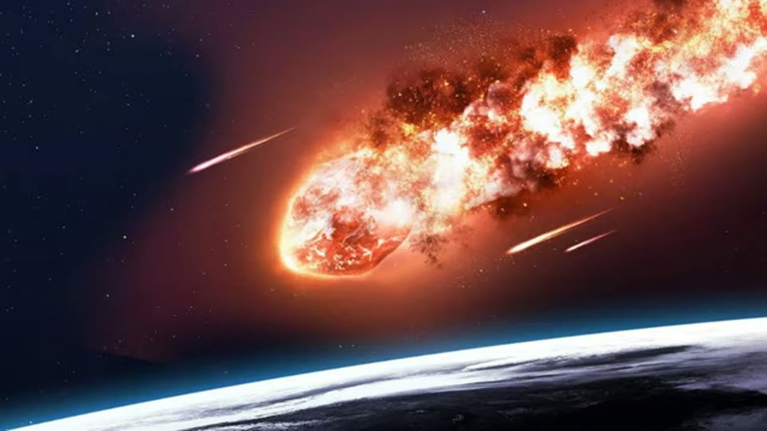
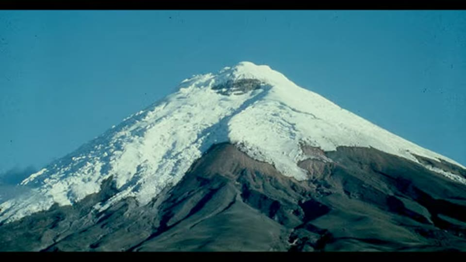

Curious Being
Was an Advanced Civilization Wiped Out by a 12,800-Year-old Comet at Younger Dryas?
Tina · 16 min · watch on YouTube · summarised 2026-08-24
The Younger Dryas is a sudden cooling between about 12,800 and 11,600 years ago, as the earth was leaving its last glacial period. It matters, she says, because it falls exactly where humans are supposed to have changed from nomadic hunter-gatherers into settled societies 00:00–00:52.
Her interest is one particular explanation for it: the cosmic impact hypothesis, which she introduces as "highly debatable" and then endorses. A catastrophic encounter with a meteor or meteors 12,800 years ago, an impact winter, global cooling, cultural shifts, population decline, and the megafauna extinction that took the mastodons, mammoths and dire wolves 00:52–01:28.
The evidence she accepts
Stated as a list and treated as settled 01:29–02:22:
- A 31 km impact crater beneath the Hiawatha Glacier in Greenland, which she dates to 12,800 years old.
- Ice cores showing high levels of combustion aerosol.
- A black mat layer from biomass burning.
- High-temperature melt glass and nanodiamonds at hundreds of sites.
- A platinum spike reaching South America and Africa.


The physical evidence she accepts, and the crater the date hangs on.
These are all very real signs of a big cosmic impact and are all dated to the same timeframe.
And the shape of the event, which does real work later: not one strike but a fragmented comet. A single impact would not scatter material across continents; a debris stream can produce thousands of airbursts within minutes, over several continents, which would account for the burning 02:22–02:57.

The shape of the event the argument needs - a debris stream, not one strike.
She then states the claim she has come to test 02:57–04:34. If such a civilisation existed, the megalithic sites are what is left of it — Giza, Baalbek, Machu Picchu, Sacsayhuamán, Puma Punku, Yangshan, Longyou — precision cuts, huge blocks, giant caves, and no records. If a cataclysm destroyed its technology and decimated its population, survivors would be returned to a Stone Age.
For scale she sets it against the Chicxulub impact, and the comparison is made against her own case 04:34–06:01: the Cretaceous–Paleogene crater was very much larger, that event killed 76% of life on earth, and the Younger Dryas comet was a smaller episode of the same kind — wildfires, dust, climate change, an impact winter, and at most the megafauna extinction.
The test
This is the part that makes the video, and she states the prediction before looking 06:01–06:26:
If a cataclysm occurred during the Younger Dryas and set back a civilization to the Stone Age, then we would expect evidence of severe damage and a sudden major population decrease or population bottleneck. Did that happen after the Younger Dryas comet impact? Not really.
Four lines of published population data, all of them going the wrong way for her hypothesis 06:26–08:02:
- A chart of effective population size over the last 500,000 years, from a 2016 paper in Nature. She marks 12,800 years ago on it with an orange band. After the Younger Dryas there is perhaps some regional decline, and no significant overall change.
The chart's key is legible and it is worth reading: the seven curves are ‡Khomani San, Ju|'Hoan, Mbuti, Yoruba, Luhya, Dinka and French. Six African populations and one European. No American, East Asian or Near Eastern curve appears on it.

The test, and what the test could actually have seen.
- A 2005 study of ancient Western Europe: a significant population increase around 15,000 years ago, before farming, followed by a rapid decrease well before the Younger Dryas. It also records people migrating between regions as the climate shifted. The figure she shows is a summed radiocarbon-date probability plot for three regions with their sample sizes printed on it — N. Europe 1,018, France 799, Iberia 438 — against an axis in ka cal BP. It is the best-resolved dataset in the video and gets the least time.
- A 2015 report: European, Asian and American populations went through a bottleneck around 15,000–20,000 years ago, and the African population through a milder one at the same time. All of it before the impact. This one is credited on screen — Nature (2015) 526:68–74.


The two studies placing the bottleneck before the impact.
- In Mesopotamia, rapid and continuous population growth between 13,000 and 11,000 years ago.
From these scholarly reports we see there was no obvious global population decrease during Younger Dryas.
The one place it does show, and what happened next
North America is the exception and she gives it fairly 08:02–09:35. Studies suggest a significant decline and reorganisation in the early centuries of the Younger Dryas, varying by region. The Clovis horizon ends around 12,800 years ago. Stone quarries in the south-eastern United States that had been heavily used appear largely abandoned, and the number of stone tools falls substantially, which indicates less activity.
But the Clovis people did not vanish. Climate change and the loss of the large animals forced them to move and to invent new tools, and the post-Clovis cultures — Folsom in northern New Mexico is her example — derive from Clovis and carry the same fluted points.

The one region where the decline is real, and how it is measured.
Which produces the argument that decides the video:
The natural disaster caused major destruction for Paleolithic people, but it didn't end their culture. So such a disaster shouldn't be devastating enough to destroy a highly-sophisticated civilization, which has better means to protect and insulate its population.
The colder control case
Then a second test, and a good one 09:57–12:09. The Last Glacial Maximum was substantially colder than the Younger Dryas, and humans came through it.
- During the LGM, the climatically suitable area for humans covered at least 36% of Europe.
- Modelled European population dynamics track the major climate fluctuations, with population sometimes reduced to 30% of its peak. She adds a caveat of her own: that need not mean 70% died, because Europe connects to the rest of Eurasia and to Africa, and people move.
- The global average surface temperature at the LGM was about 6 °C below today's. She insists on the word global: regional figures diverge, some much more and some less.

How much colder the Last Glacial Maximum was, and where the figure comes from.
The analogy she uses for that is homely and it works. A New York winter is about 20 °C colder than a Florida one; in summer the gap is about 5 °C. Nobody concludes that New York is uninhabitable in winter, and people lived in the north-east for thousands of years. A large temperature drop in an average is not the same as a place becoming unlivable.
The map
She has one line of retreat left and she tests that too 12:10–13:35. If the impact hit different regions differently, could a regional advanced civilisation have been destroyed because it sat where the damage was worst?
So she puts her map of megalithic sites beside the updated Younger Dryas boundary map — the distribution of the impact proxies.

The sites offered as the lost civilisation's road signs.
There is some overlap. But many of the megalithic sites lie outside the worst-hit areas.

The comparison the conclusion rests on.
This means the cosmic impact shouldn't have completely ravaged the lost civilization that built these sophisticated megalithic sites.
Two further points close it off. The variety of building styles suggests more than one civilisation would have to be involved. And the Younger Dryas cooling was milder than the Last Glacial Maximum, which humans survived.
The last piece of evidence is about resilience rather than catastrophe 13:53–14:53: a 2019 paper in Science giving the first evidence that people in Africa settled for centuries at high altitude during the last ice age, 45,000 years ago, where it had been assumed nobody could live.

The closing argument from human resilience.
Where she lands
She does not abandon the lost civilisation. She abandons the mechanism she came for, and says so plainly 14:53–15:28:
Ok, so human populations didn't drop significantly 12,800 years ago in the Younger Dryas cosmic impact. This is somewhat of a surprise since I expected it could be the explanation to the ending of a lost advanced civilization. I believe there existed one or more advanced civilizations before ours… We need to keep searching for answers.
What you can check yourself
- The impact proxies are published and physical, and one of them is handed to you with its DOI. Kennett et al., Nanodiamonds in the Younger Dryas Boundary Sediment Layer, Science 323, issue 5910, p. 94, 2 January 2009, doi 10.1126/science.1162819 — on screen, unspoken. Black mat layers, melt glass, the platinum anomaly and the combustion aerosols in ice cores are all measurements in a literature argued over in public.
- The temperature figure is fully cited on screen too. Tierney, Zhu, King, Malevich, Hakim and Poulsen, Glacial cooling and climate sensitivity revisited, Nature 584, 569–573, 26 August 2020, giving global mean LGM cooling of −6.1 °C with a 95% confidence interval of −6.5 to −5.7 °C.
- The fluted-point map is a public database. PIDBA, at pidba.utk.edu, 11,906 points at 13,000 cal BP. Anyone can go and look at the distribution she is describing.
- The Hiawatha crater is real and the crater is not the disputed part. What its 31 km diameter means for the Younger Dryas depends entirely on its age, which is the number to check.
- The population data are the whole argument and they are ordinary published science. A 2016 Nature effective-population-size curve, a 2005 Western European study, a 2015 bottleneck report and a Mesopotamian growth record. Anyone can look at whether they say what she says.
- The Clovis–Folsom relationship is a matter of stone tools in museum drawers. Whether Folsom points are derived from Clovis points is visible on the objects.
- The abandonment claim is testable in the same way: south-eastern quarry sites falling out of use and tool counts dropping around 12,800 years ago is a countable claim.
- The 36% figure and the 30%-of-peak figure are specific, and both come from modelling work that can be found and read.
- The 6 °C LGM figure is standard and easy to verify.
- The two maps can be laid over each other by anyone. The Younger Dryas boundary distribution is published; the megalithic list is short enough to plot by hand.
What the video does not settle
- The main chart cannot show the population she is asking about. The seven curves on the 500,000-year figure are ‡Khomani San, Ju|'Hoan, Mbuti, Yoruba, Luhya, Dinka and French. Six African populations and one European. There is no American, East Asian or Near Eastern curve on it — so the North American decline she concedes two minutes later could not have appeared on the chart she uses to rule out a decline. The labels are legible throughout.
- The tool may not be able to detect the event either. Those curves are step functions on a logarithmic axis ending at 5 kya, and the steps either side of her orange band are thousands of years wide. A disruption a few centuries long sits below what the figure can resolve. The video treats a flat line as a positive finding of no collapse and never asks what it could have registered.
- A global average was used to answer a regional question, and then a map was used instead of data. She raises the regional possibility explicitly and answers it by comparing site distributions rather than by looking for regional demographic evidence, which is what the earlier part of the video was made of.
- The megalithic map is her own construction, and the two maps barely share a hemisphere. Hers is a Google Maps screenshot with about twenty-five unlabelled pins: the Andes, the eastern Mediterranean, India, China, Korea, Japan, one in Sweden, one in Indonesia. There is not a single pin in North America. The impact field she lays it against is a lobe covering North America and western Europe with nothing outside it. Most of the "no overlap" result follows from the two maps having been drawn to show different parts of the world, and that is never remarked on.
- The sites on the map are mostly dated, and not to the Younger Dryas. Giza, Baalbek, Machu Picchu, Sacsayhuamán and Puma Punku have conventional dates thousands of years later. Using them as markers of a 12,800-year-old civilisation assumes the conclusion the map is offered to support.
- "A sophisticated civilization has better means to protect its population" is asserted and is arguable both ways. Complex societies depend on supply, storage, specialisation and trade, and the case that this makes them more fragile rather than less is at least as available. Nothing is offered for it either way, and it is the sentence the whole conclusion turns on.
- The Hiawatha date is stated flat, with no source. The crater had been announced only in 2018 and its age did not follow from the impact proxies listed alongside it. It is the single number carrying the hypothesis in this video, and it should be checked against current work before being repeated.
- Not one paper is named aloud, and four are fully cited on screen. The narration says "a 2016 Nature", "a 2005 paper", "a 2015 report". The frames carry a DOI for the nanodiamond paper (Kennett et al., Science 323:5910, 2009), a full citation for the temperature figure (Tierney et al., Nature 584:569–573, 2020), a source line reading Nature (2015) 526:68–74, and the PIDBA database logo on the fluted-point map. This is the best-sourced video in the corpus and none of it is spoken. A viewer listening rather than watching would think nothing here had a reference.
- The two population figures use different methods and are treated as one line of evidence. The Western European curve is a summed radiocarbon-date probability plot with sample sizes printed on it — N. Europe 1,018, France 799, Iberia 438 — and it is the only dataset in the video with the resolution to see a few-century event. The other two are genomic reconstructions. She gives the radiocarbon one the least time.
- On the 2015 chart, her bottleneck band and her spoken date do not match. She says 15,000 to 20,000 years ago. The orange band she has drawn on the figure starts under the axis label reading 67–120 kya. Reading a scaled logarithmic axis off a video frame is imprecise and this is recorded as something to check rather than settled — but the two numbers are an order of magnitude apart.
- "Stone is almost impossible to date" is used to explain away the absence of dates, and it is a stronger claim than the field supports. Excavation context, overlying sediments, organic material in mortar and luminescence on buried surfaces are all routine, and she herself relies on exactly those methods elsewhere.
- "Even with today's technology we probably couldn't duplicate them" is unsupported and does a great deal of work. No engineer, quote or study is offered.
- The Chicxulub comparison flattens a large difference. A crater diameter is not a measure of effects on a human population, and the 76% figure is about all life 66 million years ago. It is used rhetorically to size an event, not analytically.
- The Mesopotamian growth record is the one that most needs a source and has none. Continuous population growth through 13,000–11,000 years ago in the region where the Younger Dryas is most often argued to have driven the shift to farming is a strong claim stated in one sentence.
- Nothing here tests whether a civilisation existed. The video tests whether one mechanism could have destroyed it. She is explicit that she still believes in it, and the belief survives the test untouched because nothing in the test was ever aimed at it.
See also
- Carolina Bays and the Younger Dryas Impact — the companion video, where the same impact evidence is examined on the ground rather than assumed.
- Göbekli Tepe: New Excavations Rewrite Everything We Thought We Knew — two years later, rejecting the reading of Pillar 43 as a record of this impact. She accepts the event here and rejects what people build on it there; the two positions fit together rather than clashing.
- An Eye-opening Interpretation on Göbekli Tepe "Handbags" & Vulture — where the comet reading of the same pillar is set aside for a proposal about pit traps.
- Could the Giza Pyramids and Sphinx Be Much Older Than Believed? — the Younger Dryas doing a completely different job: not an impact but a regional climate signal, cold and wet across the Mediterranean, used to look for a wetter window at Giza.
- Revelations of a Massive Underground Oya Quarry in Japan! and Barabar Caves — sites from the "we could not duplicate them today" class, which she later examines individually and concedes.
What we have not checked
- No source in this video has been opened. Four are identifiable from the screen — Kennett et al. 2009 with its DOI, Tierney et al. 2020 with its volume and pages, Nature 526:68–74, and the PIDBA database — and what is reported of each is what is legible in the frame. None has been read.
- Everything else is as she gives it: the 12,800-year Hiawatha date, the 31 km diameter, 76% of life, 36% of Europe, 30% of peak population, and the Mesopotamian growth record.
- The 2005 figure is shown without its citation. Its own printed caption — "Figure 2. Overview of Late Glacial radiocarbon dating probabilities for archaeological sites and assemblages" — is legible, and no author, title or journal appears with it.
- The reading of her bottleneck band on the 2015 chart is uncertain. The axis is scaled and logarithmic and the reading was taken off a video frame. That the band begins under the 67–120 kya label is what the frame shows; whether that is what she intended has not been established.
- The 2019 high-altitude study is illustrated with an unlocated photograph of a glaciated volcanic cone, which does not look like the Ethiopian highlands. Where it was taken is not known, and the study is named nowhere.
- The Younger Dryas boundary map is not identified. She calls it "recently updated"; no version, compiler or date is given.
- The megalithic map's site list is taken from the narration, and whether the map on screen shows the same set has been checked only against what is legible in the frame.
- The transcript is a clean uploaded caption track, so the proper nouns are the channel's own spelling. One typo survives in the file: "31-kilomenter" for 31 kilometre.
- The Clovis and Folsom claims are as stated. No site, assemblage or publication is named for the quarry abandonment or the fall in tool counts.